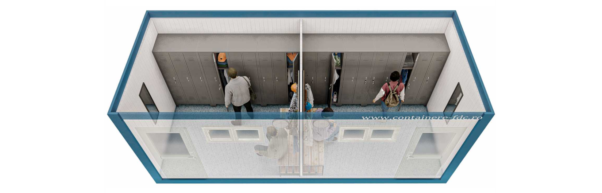

In orice mediu de lucru, fie ca este vorba de un santier de constructii, o unitate industriala sau un eveniment temporar, asigurarea unor conditii decente pentru angajati este cel mai important factor. Containerele vestiar reprezinta solutia ideala pentru organizarea spatiilor destinate schimbului si depozitarii obiectelor personale. Acestea sunt usor de instalat, pot fi complet echipate la solicitarea clientului si pot fi configurate in functie de numarul de persoane sau specificul activitatii.Un container vestiar ofera siguranta, igiena si confort, contribuind la respectarea normelor de protectie a muncii si la cresterea gradului de multumire a angajatilor. Fie ca ai nevoie de un vestiar temporar pe un santier sau de o solutie permanenta intr-o zona industriala, aceste containere sunt rapide, eficiente si economice. Alegerea containerelor vestiar inseamna o abordare moderna, flexibila si adaptata nevoilor reale din teren.
In orice mediu de lucru, fie ca este vorba de un santier de constructii, o unitate industriala sau un eveniment temporar, asigurarea unor conditii decente pentru angajati este cel mai important factor. Containerele vestiar reprezinta solutia ideala pentru organizarea spatiilor destinate schimbului si depozitarii obiectelor personale. Acestea sunt usor de instalat, pot fi complet echipate la solicitarea clientului si pot fi configurate in functie de numarul de persoane sau specificul activitatii.
Contactați-ne pentru o ofertă detaliată adaptată nevoilor dumneavoastră.
Cere Oferta Acum